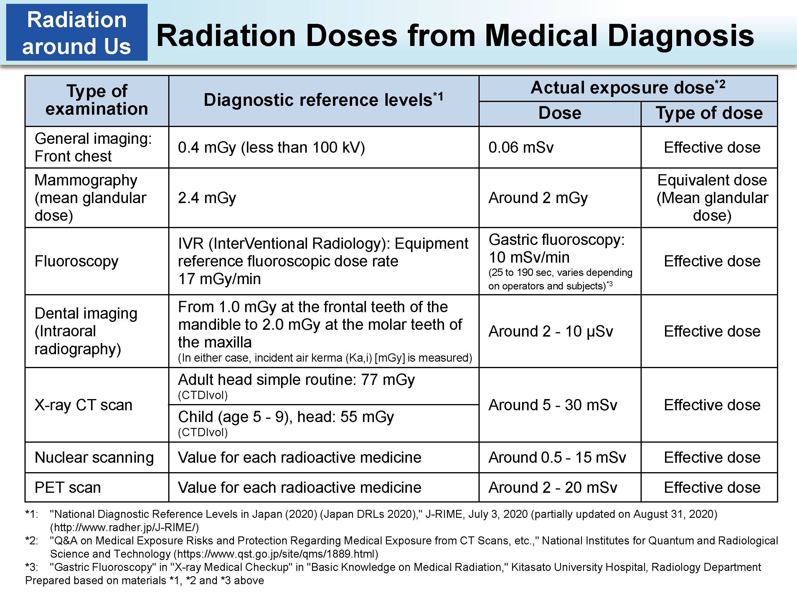

What is radiation dose?
A dose of medical radiation is not like a dose of medicine. When it comes to radiation dose, there are different types of and units of measurement. Radiation dose is a complicated topic.
Why are there different ways to measure a dose of radiation?
When you think of a dose of medication, you think of an absolute measurement of the quantity you take. But radiation isn't measured by the quantity you take.
Radiation from medical examinations is similar to sunlight. The effect of sunlight on the skin depends on the light's intensity and how long a person stays in it.
Sunlight Effect Factors:
- Intensity
- Length of exposure
- Sensitivity of the skin
People often describe their level of sun exposure based on the effect it has on their skin. Friends may say "You got a lot of sun." Or, "You're red; that must hurt." They are gauging the amount of sunlight, to which you were exposed, by what they see.
Likewise, a radiation dose will tell us about an effect the radiation has on tissue. Radiation dose can be measured a number of ways.
Radiation Doses
What these different doses can tell us:
- Absorbed dose is used to assess the potential for biochemical changes in specific tissues.
- Equivalent dose is used to assess how much biological damage is expected from the absorbed dose. (Different types of radiation have different damaging properties.)
- Effective dose is used to assess the potential for long-term effects that might occur in the future.
Definitions
Absorbed dose is the concentration of energy deposited in tissue as a result of an exposure to ionizing radiation. Note: In this case, it means the energy absorbed by human tissue.
X-rays, unlike sunlight, can penetrate deep into the body and deposit energy in internal organs. X-rays can even pass through a person's body.
Absorbed dose describes the intensity of the energy deposited in any small amount of tissue located anywhere in the body.
The unit of measurement for absorbed dose is the milligray (mGy).
If you have a CT of your upper abdomen, the absorbed dose to your chest is very low because it has only been exposed to a small amount of scattered radiation. The absorbed dose to your stomach, pancreas, liver, and other organs is greatest because they have been directly exposed.
Definition 2
Equivalent dose is an amount that takes the damaging properties of different types of radiation into account. (Not all radiation is alike.)
Absorbed vs. equivalent dose
The difference between absorbed dose in tissue and equivalent dose:
- Absorbed dose tells us the energy deposit in a small volume of tissue.
- Equivalent dose addresses the impact that the type of radiation has on that tissue.
Because all radiation used in diagnostic medicine has the same low-harm potential, the absorbed dose and the equivalent dose are numerically the same. Only the units are different.
For diagnostic radiation: The equivalent dose in milliSievert (mSv) = the absorbed dose in mGy.
Definition 3Effective dose is a calculated value, measured in mSv, that takes three factors into account:
- the absorbed dose to all organs of the body,
- the relative harm level of the radiation, and
- the sensitivities of each organ to radiation.
Effective dose: The quantity of effective dose helps us take into account sensitivity.
Different body parts have different sensitivities to radiation. For example, the head is less sensitive than the chest.
Effective dose relates to the overall long-term risk to a person from a procedure and is useful for comparing risks from different procedures.
Effective dose is not intended to apply to a specific patient.
The actual risk to a patient might be higher or lower, depending on the size of the patient and the type of procedure.
Example of absorbed dose, equivalent dose, and effective dose. If you have a CT of the abdomen, what is the dose to the abdomen?
- Typical absorbed dose: 20 mGy
- Typical equivalent dose: 20 mSv
- Typical effective dose: 15 mSv
What dose should be used to assess potential long-term risks from various procedures?
Absorbed dose and equivalent dose measurements can be used to assess short-term risk to tissues. (Short term is weeks to months.)
For properly performed diagnostic examinations, there will be no short-term effects from the radiation exposure, so absorbed dose and equivalent dose are not very useful.
For patients, the most important dose quantity is effective dose because it allows for simple comparisons of long-term risks.